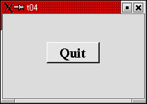
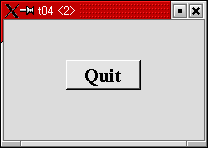
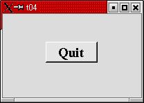
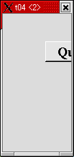
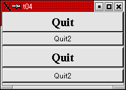

トップページ＞＞＞
「ぷろぐらみんぐ」目次＞＞＞
「Qt Tutorial Index Page」
Chapter 4: Let There Be Widgets
初版作成：2002/12/29
- ソースコード
- 解説
- コンパイル・動作確認
- いじくりまわす

今回の作例では、プログラマーが自分でウィジェットを作る方法の一つを示します。
・・・といっても、要はですね。今まではQPushButtonなりQVBoxなりを直接トップレベルウィジェットに
指定してきましたが、今回はQWidgetというQtウィジェットの基本ともなるべきウィジェットクラスを
独自に拡張し、そいつをトップレベルに張り付けてみよう、ということです。
BCBやDelphiユーザー向けに言えば、TFormを拡張して、TForm1を作るのと雰囲気的には変わりありません。
ついでにウィジェットの最小、および最大サイズの指定方法も示します。
最後の方では、以降のTutorialで作っていくちょっとしたミニゲームの大雑把な紹介も併せて行います。
上にしめしたのが実行結果です。ボタン部分はふつうのQPushButtonですが、それ以外のウインドウ部分は
QWidgetクラスを継承したMyWidgetクラスです。下に示すのがソースです。
#include <qapplication.h>
#include <qpushbutton.h>
#include <qfont.h>
class MyWidget : public QWidget
{
public:
MyWidget( QWidget *parent=0, const char *name=0 );
};
MyWidget::MyWidget( QWidget *parent, const char *name )
: QWidget( parent, name )
{
setMinimumSize( 200, 120 );
setMaximumSize( 200, 120 );
QPushButton *quit = new QPushButton( "Quit", this, "quit" );
quit->setGeometry( 62, 40, 75, 30 );
quit->setFont( QFont( "Times", 18, QFont::Bold ) );
connect( quit, SIGNAL(clicked()), qApp, SLOT(quit()) );
}
int main( int argc, char **argv )
{
QApplication a( argc, argv );
MyWidget w;
w.setGeometry( 100, 100, 200, 120 );
a.setMainWidget( &w );
w.show();
return a.exec();
}
目次に戻る
それではポイント部分の解説を行っていきます。今回はCPPのクラス機能が前面にでていますが、CPPのクラスについては
基本的な知識があることを前提としていますので解説しません。
class MyWidget : public QWidget
{
public:
MyWidget( QWidget *parent=0, const char *name=0 );
};
ここでは新しいウィジェットクラスを宣言しています。このクラスはQWidgetから派生しているので新しいクラスも
Qtのウィジェットになります。んでもってやっぱり、トップレベルウインドウとか子ウィジェットみたいに使えるわけです。
今回のクラスではメンバを一つだけしか持ってません。と、ゆーかウィジェットとして必要な機能とかはQWidgetの方で
すでに実装済みです。とゆーことで、QPushButtonを生成して最大最小サイズを調整するコンストラクタしか派生先のこの
クラスで宣言していなくても、簡単にウィンドウとしての役目を果たしてくれるわけです。
このコンストラクタ宣言はQtウィジェットの標準的なコンストラクタ宣言でもあります。もしも自分でウィジェットを
派生させるときは、同様の形式のコンストラクタを実装するべきでしょう。
第一引数は親ウィジェットです。トップレベルウィンドウにするときは、今まで見てきたようにNULLポインタ(0らしい)
を親として指定します。今回のコンストラクタ宣言ではデフォルト引数を指定することにより、なにも指示がなかった場合は
トップレベルウィンドウとして作成されることになります。
第二引数はウィジェットの名前です。これはウインドウタイトルバーやボタンに表示される文字列ではありません。
単刀直入にたとえれば、BCBやDelphiで言うところのVCLのNameプロパティです。
これはウィジェットを後で参照するときや、Xのウィジェット階層構造をデバッグするときに使うことになる・・・らしい、
です。
実はQtDesignerでもしっかりとNameプロパティとして登場していますので、いい加減に扱うことはできません。とはいっても、
まあ今回程度の簡単なチュートリアルくらいでは気にする必要はないでしょう。QtDesignerやKDevelopを扱い始めればしっかり
考える必要があります。
MyWidget::MyWidget( QWidget *parent, const char *name )
: QWidget( parent, name )
コンストラクタの実装はここから始まります。ほとんどのウィジェットもこれと同様に、親ウィジェットやNameプロパティを
単にQWidgetのコンストラクタに流しています。
{
setMinimumSize( 200, 120 );
setMaximumSize( 200, 120 );
このウィジェットはサイズ変更をどう扱えばいいのかまだ知りません。ので、こちら側で最大と最小サイズが等しくなるように
修正しています。
次のChapterでは、ユーザーからのサイズ変更イベントへの応答方法を例示します。
QPushButton *quit = new QPushButton( "Quit", this, "quit" );
quit->setGeometry( 62, 40, 75, 30 );
quit->setFont( QFont( "Times", 18, QFont::Bold ) );
ここで子ウィジェットのセットアップを行っています。新しいウィジェットの"Nameプロパティ"は quit です。
んでもって、オブジェクトの変数名も quit ですが、わかりやすさを優先したら同じになっただけで、違っていても別段
問題ありません。quit というNameプロパティはボタンに表示する文字列とは何の関係もありません。
この子ウィジェットはコンストラクタ内ではローカル変数にすぎないことに注意してください。MyWidgetクラスでは
コンストラクタで作成したローカルなquitウィジェットを、コンストラクタから抜けた後も保持するようなコードは
どこにも書かれていません。じつは、Qtがローカルに作成したウィジェットを保持してくれています。
んでもって、デフォルトではMyWidgetオブジェクトがdeleteされるときに、自動的に子ウィジェットもdeleteしてくれる
ようになっています。これがなんでMyWidgetにデストラクタが存在しないか、の理由です。
(プログラマー自身が明示的に子ウィジェットをdeleteしても悪影響はありません。子ウィジェットはdeleteされるとき、
Qtにその旨を自動的に知らせてくれるからです。）
setGeometry()メソッドは、move()とresize()でも代用可能です。
connect( quit, SIGNAL(clicked()), qApp, SLOT(quit()) );
}
ここで qApp という見慣れない変数（使われ方から言ってQtウィジェットの一種らしいです）が突如出現しています。
これ、じつはQtが提供する アプリケーションウィジェットへのポインタです。
ウィジェットというのはソフトウェアの部品であり、再利用可能で汎用的であるためには、環境については必要最低限度
の情報を保持するにとどめるべきである。そういったQtのウィジェットに対するポリシーがあります。
ところが今回のようにウィジェットがアプリケーションと直接対話する必要に迫られたときなど、このポリシーが障壁となって
しまいます。そこで、Qt は qApp というアプリケーションオブジェクトへのポインタを提供してくれているわけです。
BCBでも各フォームのヘッダファイルに、そのフォームクラスへのポインタがexportされてるじゃないですか。
あれですよ、あれ。
int main( int argc, char **argv )
{
QApplication a( argc, argv );
MyWidget w;
w.setGeometry( 100, 100, 200, 120 );
a.setMainWidget( &w );
w.show();
return a.exec();
}
ここでようやくカスタムウィジェットのインスタンスを作成し、メインウィジェットに設定してあぷりけーしょんを実行して
います。
目次に戻る
んじゃあ、コンパイルしてみましょう。
[fenjin@murasame t04]$ vi t04.cpp
[fenjin@murasame t04]$ progen -n t04 -o t04.pro
[fenjin@murasame t04]$ tmake -o Makefile t04.pro
[fenjin@murasame t04]$ make
g++ -c -pipe -Wall -W -O2 -DNO_DEBUG -I/usr/lib/qt/include -o t04.o t04.cpp
g++ -o t04 t04.o -L/usr/lib/qt/lib -L/usr/X11R6/lib -lqt -lXext -lX11 -lm
[fenjin@murasame t04]$ ls
Makefile t04* t04.cpp t04.o t04.pro
んで、実行ファイル t04 を実行すると冒頭に示したようなウインドウが表示されるわけです。中央のQuitボタンをクリック
するとアプリケーションは終了します。
ただちょっと今までと違うのは、最大と最小サイズを同じ値にしていますので、サイズ変更ができない点です。
目次に戻る
簡単にできるところでは、「-geometryオプションとsetGeometry()のどちらが優先されるか」ですか。
ぶっちゃけた話、ウインドウの位置は-geometryオプションで指示したとおりになりましたがウインドウのサイズはsetGeometry
()が優先されました。たぶんこれ、geometryオプション自体はふつうに処理されているんでしょうけどsetMinimumSizeとsetMaximum
Sizeでもってサイズに関して上書きされちゃうのかもしれませんね。
他にいじくれるところはないでしょうか・・・。何か目的があるわけじゃありませんが、MyWidgetをmain()内部でもう一つ
作ってみましょうか。
修正前：
w.show();
return a.exec();
修正後：
w.show();
MyWidget w2;
w2.setGeometry(350, 100, 100, 200);
w2.show();
return a.exec();
実行してみるとですね、ウインドウが二つ表示されてしまうのですよ。んで、setGeometryで大きさを変更しているはず
なのに両方とも最初と同じ大きさです。二つ目のウインドウはこんな感じです。

んで、どちらのQuitボタンをクリックしてもアプリケーションは終了します。おもしろいですね。
さて・・・setMinimumSize()とsetMaximumSize()を取り払ったらどうなるのでしょうか？
修正前：
setMinimumSize(200, 120);
setMaximumSize(200, 120);
修正後：
//setMinimumSize(200, 120);
//setMaximumSize(200, 120);
前の実験の続きですので、相変わらずウインドウが二つ表示されますが・・・
一つ目。

続いて二つ目。

二つ目のsetGeometry()が有効になっています。あと、一つ目のウインドウのウインドウタイトルバー右上、ウインドウ操作
アイコン群に最大化ボタンが新たに現れているのに気がつかれたでしょうか。こういった変化もあるようですね。
最大最小サイズの設定をはずしましたので、ウインドウの四辺四隅をマウスでドラッグすればふつうにウインドウサイズを変更
できるようになりました。
では、最後はちょっと複合技を試してみましょう。
まず、MyWidgetの継承元をQWidgetではなくQVBoxに変更してみましょう。
次にQPushButtonをもう一つ作成してみましょう。QVBoxを利用すればそのまま縦方向に詰めて配置されます。
んでもって、main()内で作成した二つ目のMyWidgetを、QVBoxの中に入れてみましょう。
んでもって・・・と、最後の実験はソースを見てからのお楽しみで。
今回は変更箇所が散在しているので、新しいソースコードとして全て示します。
#include <qapplication.h>
#include <qpushbutton.h>
#include <qfont.h>
#include <qvbox.h>
class MyWidget : public QVBox
{
public:
MyWidget(QWidget *parent=0, const char *name=0);
};
MyWidget::MyWidget(QWidget *parent, const char *name)
: QVBox(parent, name)
{
QPushButton *quit = new QPushButton("Quit", this, "quit");
quit->setFont(QFont("Times", 18, QFont::Bold));
QPushButton *quit2 = new QPushButton("Quit2", this, "quit2");
quit->setFont(QFont("Times", 18, QFont::Bold));
connect(quit, SIGNAL(clicked()), qApp, SLOT(quit()));
connect(quit2, SIGNAL(clicked()), quit, SIGNAL(clicked()));
}
int main(int argc, char **argv)
{
QApplication a(argc, argv);
MyWidget w;
MyWidget w2(&w);
w.setGeometry(100, 100, 200, 120);
a.setMainWidget(&w);
w.show();
return a.exec();
}
QVBoxのコンストラクタについてはQtのドキュメントで
Public Members
QVBox ( QWidget * parent=0, const char * name=0, WFlags f=0, bool allowLines=TRUE )
として、QWidgetのコンストラクタがそのまま流用できることを確認しています。
下に実行結果を示します。

上半分がMyWidget本来のQuit, Quit2です。Quit2の方ではBoldが効いていないような気もしますがそれは今回はさくっと無視
しまして。下半分がmain()内で生成した二つ目のMyWidgetインスタンスです。
動作としてはQuit, Quit2 どちらをクリックしてもアプリケーションは終了します。
今回のキモは・・・ズバリ。
connect(quit2, SIGNAL(clicked()), quit, SIGNAL(clicked()));
です。SIGNAL 同士が connect() できる。これはWindowsでは簡単には実現できません。
つまり今回の実験では、
quitのclicked()シグナル→qapplicationのquit()スロット
プラス、
quit2のclicked()シグナル→quitのclicked()シグナル
んでもって結局applicationのquit()スロットへはquitのシグナルと、quit2のシグナルの二通りの通り道が造れたわけです。
さて、今回はへんちくりんなconnect()関数の使い方を示しておしまいです。ではいよいよいミニゲームの作成の下準備に
入りましょう。
目次に戻る
トップページ＞＞＞
「ぷろぐらみんぐ」目次＞＞＞
「Qt Tutorial Index Page」